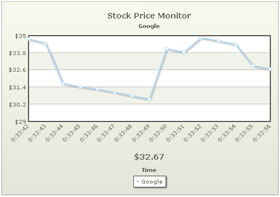
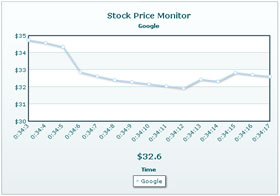
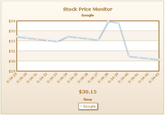
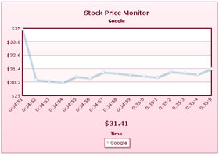

Data-streaming Charts > Configuration
Here, we'll explore a few of the many visual and functional configurations possible for the chart. Specifically, we'll see how to:
- Apply pre-built or custom palettes to the chart
- Set custom y-axis lower limit and upper limit
- Specify different decimal precisions for the chart and axis
- Set custom canvas margins to accomodate larger y-axis values and labels
- Make use of chart element paddings to avoid overlapping of x-axis labels
Let's see each of them one by one.
The data-streaming charts offer 5 pre-defined color palettes for you to choose from. Each of these palettes are accessible by the number 1-5. To choose a palette, all you need to do is set:
<chart palette='2' or '3' or ..>
Shown below are a few examples of palettes applied on our previous chart:
 |
 |
<chart palette='2'...> |
<chart palette='3'...> |
 |
 |
<chart palette='4'...> |
<chart palette='5'...> |
Additionally, you can also define an entire new palette by setting a single theme color using:
<chart paletteThemeColor='669933' ..>
This will create a new palette derived from this color and then color the chart as under:
To change the color of each dataset's line or column, you can set:
<dataset color='FF5904' ..> or your hex code without #.
Similarly, the color of all visible elements on the chart is configurable either using XML attributes (defined in XML Sheet) or using STYLEs feature.
If you already know the range of your real-time data and want to fix the chart limits accordingly, you can do so as under:
<chart yAxisMinValue='20' yAxisMaxValue='40' ..>
The above attributes set the lower limit of chart as 20 and upper limit as 40. This limit stays valid as long as all the historical and incremental data stay within this range. As soon as a value violates this limit, the chart automatically calculates a new y-axis limit and applies the same.
Shown below is an example of custom limits applied to our Google Stock Monitor chart:
As you can see above, the chart now uses our custom defined limits, instead of automatic limits (which usually was 29.35).
However, if any incremental value (real-time value) falls below 20 or above 40, the manual limits will be ignored and new limits will be calculated as per the incremental value.
The data-streaming charts offer you decimal rounding controls for both the data values on chart and the y-axis values. You can do so using:
<chart decimals='2' yAxisValueDecimals='1' ..>
Here, decimals sets the decimal places for all values on chart apart from y-axis values. And, yAxisValueDecimals attribute sets the decimal places for the y-axis values.
Shown below is the chart for above XML:
As you can see above, the y-axis values show a maximum of 1 decimal (or 0 if not required). Whereas, the chart values shown in tool tip show 2 decimals.
If you want to necessarily force decimals on both y-axis and chart values, you can set:
<chart decimals='2' yAxisValueDecimals='1' forceDecimals='1' forceYAxisDecimals='1'..>
This will result in:
Apart from the chart margins, the data-streaming charts in FusionWidgets also allow you to set canvas margins. This is specifically useful, when in the initial state of chart your y-axis values take lesser width, but can take much more width during incremental updates.
In such cases, you can leave a bigger canvasLeftMargin to accommodate possible increase in width of y-axis value. Shown below is an example:
<chart canvasLeftMargin='100' ...>
This results in empty space at the left side of canvas, as shown below:
You can also set canvasRightMargin, canvasTopMargin & canvasBottomMargin.
This technique is also useful when you've placed more than 1 data-streaming chart in the same page vertically over each other, and want all of their canvases to start at the same x position. In that case, you can set the same width for each chart and then set same canvasLeftMargin.
To overcome this, you can set the vertical padding between real-time value and canvas using:
<chart ... realTimeValuePadding='50' ...>
This will now result in: